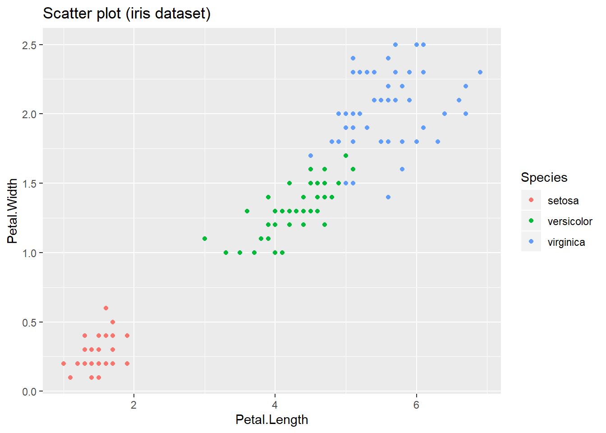
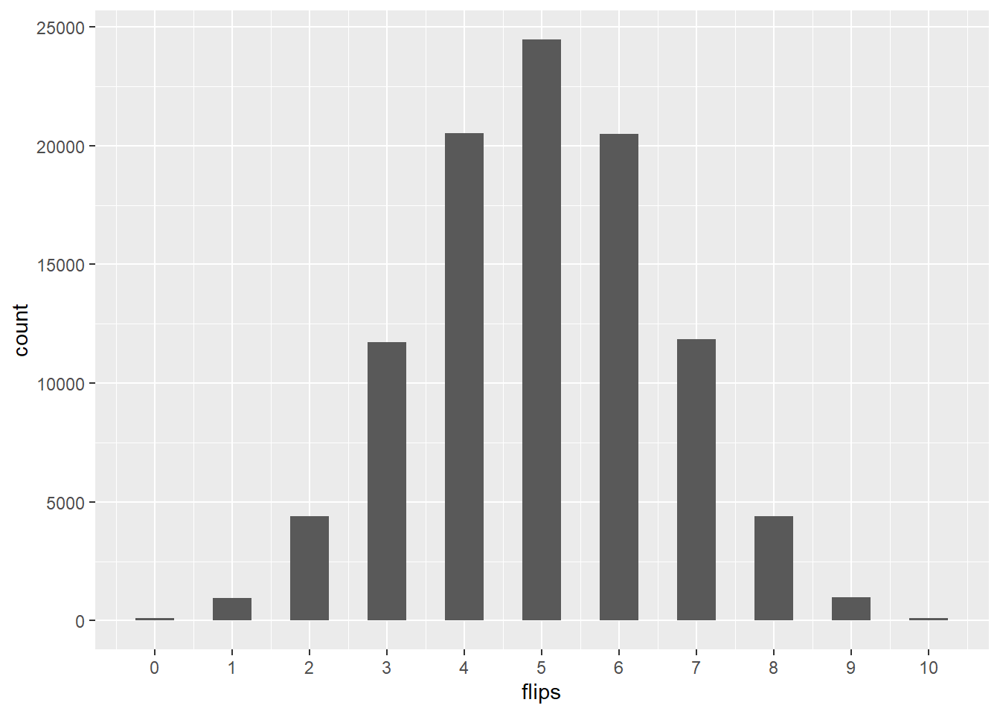

R Introduction
EXGEN5449 - Winter 2019
Stefan Schreiber
1 Installing R
R can be downloaded from the R-project website (https://www.r-project.org/). The website is highly informative, easy to navigate and also provides a great resource for everything related to R. Make sure you check out the Documentation side bar as well. The great thing about R is that almost everything is available to you for free. Alright, let’s head over to the R-project website (click the link above) and get R on our computers.
1.1 First contact
Once the installation is completed open R by double clicking the program icon. You will see R’s Graphical User Interface (GUI). Explore all menu items, familiarize yourself with it and start typing!
1.2 R as a simple calculator
As you can see R can be used like a simple calculator. However all outputs are not saved. If you want to save them, you can assign the output to a variable using the assignment operator <- and then pass it into another function:
1.3 Saving and printing output
Note that if you not calling x by typing it into the console or by passing it through another function (e.g. sqrt()), it will not print the output after assignment:
my_sequence is now saved in R’s working memory (workspace) To call the output simply type it and hit enter:
Wait a second… what does this error message mean?? R cannot find the object My_sequence. Working in R can cause a lot of head scratching if you not adhere to a clear and clean style of coding. As you likely have figured out by now, R knows the difference between upper and lower case letters, i.e. R is case-sensitive!!. Let’s try again:
my_sequence
#> [1] 1 2 3 4 5 6 7 8 9 10 11 12 13 14 15 16 17 18 19 20 21 22 23
#> [24] 24 25 26 27 28 29 30The numbers in square brackets [] simply mean the position of the element at the beginning of each line. So in this case it is 1 and 24.
2 R scripts
Typing in the console however, is not good practice as you will always have to rewrite everything you want. To solve this problem we can write our code in scripts that can be saved. To open a new script, click File > New script and a script window will open. In the R script you can write everything you want R to do and make it reproducible for yourself and for people you are working together with on projects. You can then pass it to R by right-clicking anywhere in the code and click Run line or selection. A more efficient way to do this to use the short cut Ctrl+R. Also note that you should make use of the hash symbol # to annotate your code. R will ignore all lines starting with # when sent over to the console. Here is an example of how a simply R script could look like:
3 Save workspace
To save the script file navigate to File > Save as and save where you want it. Now since we are here, I have some recommendations if you decide to work in the R GUI:
- Create a folder where you want to work in on your hard drive
- Start up R and navigate to
File > Save Workspace...and save a R workspace file (.RData) in the folder specified above. The workspace is where R stores your output for each session. You can see what’s in your workspace by typingls() - Close R, navigate to the .RData file in your folder and double-click it. Now your folder is the working directory for that R session. That means that if you load data into R (we will do this later), you don’t need to specify a file path.
- Open a new script file and save in your working folder
- When you finished your session make sure to save your script file first and then close R. When asked whether you want to
Save workspace image ?, you can clickNosince you have everything in the script file.
4 How to get help
At this point, we have already used some functions but there are more arguments we can pass into the functions. Whenever you encounter a new function such as plot(), I highly recommend to pull up the help file by typing:
The help files appear sometimes a bit cryptic but you will get used to it. Also note that if you encounter any specific problems or error messages, makes sure to check your spelling (remember R is case-sensitive). If you cannot resolve your problem it often helps to copy and paste the error message and Google it. In 95% of the cases someone has already asked your question on the internet. Another way to get help is through Question and Answer sites such as Stack Overflow (programming related) or Cross Validated (statistics related). But beware, make sure your read their guides as to what can be asked, how to search the site for answers (in 95% of the cases someone has already asked your question) and lastly how to ask questions. If you fail do to that, your question gets down-voted, likely not answered, and you may get snarky comments. So do your homework first before asking on these sites.
5 Atomic vectors
All data in R is stored in some kind of vector. You can think of the most basic vector in R as a 1-dimensional string of data with a given length, or from an Excel point of view as a contiguous row of cells containing data. Vectors can either be atomic (homogeneous) or generic (heterogeneous) in which case they are called lists. Atomic simply means that those vectors can only hold data of the same basic type, whereas generic means they can hold various basic types. This is an important concept to understand and we will explore this in a bit more detail here. There are 4 types we usually encounter in R: double, integer, logical and character. There are two more types, complex and raw, however in statistics and data science we do not need them and hence we will not discuss them here. Also note that everything that enters R in form of data is called an object, and everything that happens to objects is the result of function calls.
5.1 1-dimensional vectors
5.1.1 Double
Let’s create a simple vector of numbers by concatenating (or combining) them using the concatenate function c() and assigning the output to a new object using the assignment operator <-. But before we do that let’s make it a habit that whenever we come across a new function to look up its documentation by typing?function_name into the console. Pull up the documentation for ?c and ?"<-".
To see how many elements are in the numbers vector we use the length() function:
Based on the vector input, R classifies these numbers into one of the four basic data types mentioned above (logical, integer, double and character). We can check how R classified the input using the typeof() function:
Note: double is a computer term that stands for double-precision floating point number. We can simply think of doubles as numeric values, which include all real numbers (\(\mathbb{R}\)).
5.1.2 Integer
If you want R to handle numbers as integers, you have to add an L behind the numbers:
5.1.3 Logical
Often you also work with logical TRUE and FALSE statements (Booleans) when doing comparisons using relational operators (see also ?"<" for more details):
# using numbers
3 < 4
#> [1] TRUE
5 <= 4
#> [1] FALSE
6 > 2
#> [1] TRUE
3 >= 2
#> [1] TRUE
5 == 5
#> [1] TRUE
5 != 5
#> [1] FALSE
# using characters
fruits1 <- c("apples", "apples", "bananas", "peaches")
fruits2 <- c("bananas", "apples", "peaches", "peaches")
fruits1 == fruits2
#> [1] FALSE TRUE FALSE TRUE
fruits1 != fruits2
#> [1] TRUE FALSE TRUE FALSE
fruits1 < fruits2 # ??
#> [1] TRUE FALSE TRUE FALSEWhat’s happening here in the last statement? How can apples be smaller than bananas? Have a look at this example and predict what the outcome is before running the code! Hint: R is notorious for sorting alphabetically.
You can also compare all elements in a vector using a relational operators. Let’s do this with the two vectors we have created so far:
# our integers vector
integers
#> [1] 1 4 8 -1 -14
logicals_int <- integers > 2 # assign the output to a new object
logicals_int
#> [1] FALSE TRUE TRUE FALSE FALSE
typeof(logicals_int)
#> [1] "logical"
# our numbers vector
numbers
#> [1] 1.00 -2.00 -8.42 5.00 12.40
logicals_num <- numbers < -1 # assign the output to a new object
logicals_num
#> [1] FALSE TRUE TRUE FALSE FALSE
typeof(logicals_num)
#> [1] "logical"
# Not good!
logicals_num <- numbers <-1 # do we really want to do that?
logicals_num # what has happened?
#> [1] 1
typeof(logicals_num) # ???
#> [1] "double"
# Let's revert back to what we had before
numbers <- c(1, -2, -8.42, 5, 12.4)Side note: assignment operator <- vs. equals operator =
In the last step above, we asked which elements of numbers are smaller than minus 1. The space here between < -1 is very important. If this is typed incorrectly (as in the last example above), you will get something you likely did not want. As you can imagine if this goes unnoticed during an analysis, it can lead to wrong conclusions at worst and if did notice an unexpected results, it may take some time to figure out where it went wrong. To avoid this you could use the equals operator = instead of the assignment operator <- to assign a value to a variable name, however there are also potential issues with that. One of which is that the arguments in a function are set by the = operator, for example consider the function rnorm() which generates random numbers from the normal distribution with given mean and standard deviation. Let’s look at the documentation first ?rnorm. There you see that you can specify arguments to the function using =. In this case you cannot use the <- operator. Consider the following example:
rnorm(10) # gives you 10 random sample from the normal distribution of mean = 0 and sd = 1
#> [1] -0.99223309 3.86194601 1.86825966 -0.03500396 -2.06035151
#> [6] -0.08821928 0.73442151 0.39907579 -0.71134938 -0.93094642
rnorm(10, mean = 10, sd = 4) # works as expected
#> [1] 8.900756 7.382215 10.305575 13.872070 12.243244 9.523548 15.550020
#> [8] 1.117109 11.614193 11.252285While in this case mean and sd are an arguments to the rnorm function, they are also functions of themselves outside of the rnorm function environment. Now if we were to use the assignment operator to set the value of an argument in a function, we can create problems that could take hours of trouble shooting if something doesn’t work as expected:
rnorm(10, mean <- 10, sd <- 4) # seems to work but let's check what type `mean` is now
#> [1] 5.026157 15.927975 7.826769 7.088887 4.193694 11.516731 10.882932
#> [8] 3.810008 4.511116 9.847366
typeof(mean); typeof(sd) # not good!
#> [1] "double"
#> [1] "double"
mean(c(1, 2, 3, 4)) # using means as a function still works though
#> [1] 2.5
sd(c(1, 2, 3, 4)) # using sd as a function still works though
#> [1] 1.290994As you can see there are differences between those operators and you need to be aware of them. I personally would suggest using <- to assign values to variable names and not =. Now let’s check what objects we have in our workspace and remove mean and sd from it using the rm() function (see ?rm):
ls() # show what's in the workspace
#> [1] "error" "fruits1" "fruits2" "integers"
#> [5] "logicals_int" "logicals_num" "mean" "my_sequence"
#> [9] "numbers" "sd" "x" "y"
rm(mean, sd) # remove `mean` and `sd` from the workspace
ls()
#> [1] "error" "fruits1" "fruits2" "integers"
#> [5] "logicals_int" "logicals_num" "my_sequence" "numbers"
#> [9] "x" "y"
typeof(mean); typeof(sd) # all good again
#> [1] "closure"
#> [1] "closure"This also means that if you assign values to objects, make sure you pick a name that is not a function or object already. You can try this for example by typing ?your_object_name and see if R has a help file for it and then also check your workspace (ls()) if you have already created this name earlier in your R session.
OK, after this little detour let’s get back to the basic data types in R. So far we looked at doubles, integers, and logicals but there is one more we need to look at.
5.1.4 Character
Quite often we also want to store characters or text in vectors. This is done by specifying the character string with single or double quotation marks "double quotation marks" or 'single quotation marks' but not mixing them "do not mix quotation marks'.
characters <- c("Thomas", "John", "Sarah", "my dog is the best", "good bye")
characters
#> [1] "Thomas" "John" "Sarah"
#> [4] "my dog is the best" "good bye"
typeof(characters)
#> [1] "character"
length(characters)
#> [1] 5Can we do arithmetic with characters? There is only one way to find out!
#> Error in characters + 5: non-numeric argument to binary operatorClearly we cannot do arithmetic with characters but we can do string manipulation, which is also an important part of data science. String manipulation involves detecting characters in strings, replacing characters in strings, or removing characters from strings. But we will save this for tomorrow.
5.2 Augmented vectors
So far we have looked at atomic vectors of the base type, double, integer, logical, character (we ignored complex and raw since we likely will never encounter them statistics). In order to identify what type a vector is made of, we use the typeof() function. Now we introduce two more types of vectors which do not directly belong to the base types but instead are built on top of the base types: factors (?factor) and dates (?date). We will call those vectors augmented vectors to be consistent with the terminology used in the R for Data Science book. Augmented means that these vectors contain additional attributes including a class and also may behave differently compared to the vectors on which they were built.
5.2.1 Factors
Factors are used when you have categorical data for example you take three measurements for each of three treatments:
treat <- c("A", "A", "A", "B", "B", "B", "C", "C", "C")
treat
#> [1] "A" "A" "A" "B" "B" "B" "C" "C" "C"
attributes(treat) # note that `treat` vector has no attributes yet
#> NULL
typeof(treat)
#> [1] "character"
class(treat)
#> [1] "character"Using the factor() function we can turn these character strings into categories with different levels:
treat_f <- factor(treat, levels = c("A", "B", "C"))
treat_f
#> [1] A A A B B B C C C
#> Levels: A B C
attributes(treat_f) # now we have a class and levels added as an additional attributes
#> $levels
#> [1] "A" "B" "C"
#>
#> $class
#> [1] "factor"
typeof(treat_f) # factors are built on the character type
#> [1] "integer"
class(treat_f) # using class we can now identify `treat_f` as factor!
#> [1] "factor"5.2.2 Dates
Dates are slightly more complicated since they need a starting date or reference date from which to start counting. Dates can also specify timezone as well as the actual time. By default dates are of the class POSIXct that represent the number of seconds since 1 January 1970. For this course, we will stick to the defaults and later use the tidyverse package lubridate to work with dates as it is much user friendly.
dates <- c("2019-03-11", "2019-03-12", "2019-03-13")
dates
#> [1] "2019-03-11" "2019-03-12" "2019-03-13"
attributes(dates)
#> NULL
typeof(dates)
#> [1] "character"
class(dates)
#> [1] "character"To change a date character string into a Date object we use as.Date() function:
dates <- as.Date(dates)
dates
#> [1] "2019-03-11" "2019-03-12" "2019-03-13"
attributes(dates)
#> $class
#> [1] "Date"
typeof(dates)
#> [1] "double"
class(dates)
#> [1] "Date"Since we now have a Date object we can also add or subtract days:
dates + 60
#> [1] "2019-05-10" "2019-05-11" "2019-05-12"
dates - 12
#> [1] "2019-02-27" "2019-02-28" "2019-03-01"
# Get a more complicated date object: the system time of your computer
system_time <- Sys.time()
system_time
#> [1] "2019-03-19 12:35:39 MDT"
attributes(system_time)
#> $class
#> [1] "POSIXct" "POSIXt"
typeof(system_time)
#> [1] "double"
class(system_time)
#> [1] "POSIXct" "POSIXt"As you can see, making sure that your data is in the right format (in this case as.Date()) allows you to do the right things with it. We will encounter dates again when we plot time series data tomorrow.
5.3 typeof() vs. class()
As you saw above I also used the class() function to get the information what type, or in this case, what class an object belongs to. Under the class() function doubles and integers are both treated as numeric. The main difference between the typeof() and class() functions is that typeof() is a mutually exclusive classification based on the basic structure of the object. For example, an integer vector will always be of the type integer. You cannot overwrite it to something else. The function class() on the other hand provides a more flexible way of classifying objects. This can be useful if you are a programmer or developer who wants to create functions for specific data types other than the base types. This type of programming is called object-oriented programming. Consider the following example of how you can change the class of an object but not its basic type:
integers
#> [1] 1 4 8 -1 -14
# attempting to overwrite the integer type
typeof(integers) <- "character"#> Error in typeof(integers) <- "character": could not find function "typeof<-"What does the above error message mean? Let’s test whether we can change the class attribute of a vector.
# with `class()` this is possible (but not advisable, unless you know what you are doing ;))
class(integers)
#> [1] "integer"
class(integers) <- "my_new_class"
class(integers)
#> [1] "my_new_class"
typeof(integers)
#> [1] "integer"
integers
#> [1] 1 4 8 -1 -14
#> attr(,"class")
#> [1] "my_new_class"
integers <- unclass(integers) # removing class attribute
integers
#> [1] 1 4 8 -1 -14
class(integers)
#> [1] "integer"
typeof(integers)
#> [1] "integer"Here is another way of thinking about the object-oriented programming style. Suppose you are a programmer and your goal is to write functions that apply to various different types of cars. Also let’s assume that there is a basic data type named car, which cannot be overwritten (similar to logical, double, integer etc.). So whenever you call typeof() on any car object it will evaluate to car. It makes sense now to develop additional classes on top of the basic types so that you can differentiate between different car objects. Say for example you have a car object named mc_queen, calling typeof(mc_queen) would evaluate to car. Since Lightning McQueen is also a race car you decide to create a new class named racer for race car objects which could then be passed into the race-specific function traction() to change the traction behavior when taking high speed chicanes.
Long story short, R programmers have already made extensive use of this in order to extend the statistical capabilities of R. Many different class objects have been developed to do various different statistical tasks. Throughout the course we continue to check the class and attributes of new objects to become more familiar with them.
5.4 Coercion
5.4.1 Implicit coercion (by R)
So far we have always followed the rule of creating 1-dimensional atomic vectors using the same basic data type only. But what if you try to mix data types within a vector? If that happens, R will coerce (or change) them to the next appropriate data type according to the following hierarchy: logical < integer < double < character. Let’s see for ourselves:
mix1 <- c(TRUE, FALSE, 1L, -12L)
typeof(mix1)
#> [1] "integer"
mix2 <- c(TRUE, FALSE, 1L, -12L, 4)
typeof(mix2)
#> [1] "double"
mix3 <- c(TRUE, FALSE, 1L, -12L, 4, "what will happen next?")
typeof(mix3)
#> [1] "character"This also happens if you, for example, pass a vector into a function that expected a different type. What would you expect if you pass our logical vector logicals_int to the mean() or sum() function?
logicals_int
#> [1] FALSE TRUE TRUE FALSE FALSE
typeof(logicals_int)
#> [1] "logical"
logicals_mean <- mean(logicals_int)
logicals_mean # proportion of 1s or TRUEs
#> [1] 0.4
typeof(logicals_mean)
#> [1] "double"
logicals_sum <- sum(logicals_int) # sum of 1s or TRUEs
logicals_sum # note that the data type is integer now
#> [1] 2That makes sense! TRUE, FALSE can also be represented as 1,0. So when the mean() or sum() function evaluates a logical vector, it coerces it into an integer vector first and then executes the call. All of this happens internally and you will only hear back from R if it did not work. Now would it be sensible for the sum() function to take a character vector? Let’s try it out using our characters vector from earlier:
#> Error in sum(characters): invalid 'type' (character) of argumentNo, this does not make sense and hence R will let you know with an error message. By the way, if a message is red, it does not always mean that it is an error message — it could also be a warning, which means that R was able to execute the function call but something was not as expected. We will see one later today.
5.4.2 Explicit coercion (by you)
Sometimes you also need to coerce vectors yourself during an analysis or check their type. For that, R has a series of functions known as coercion and membership functions. Coercion functions all start with as. and then you add the type you want, e.g. as.character. Membership functions all start with is. and then you add the type, e.g. is.logical resulting in a TRUE or FALSE response. Explore them in more detail by pulling up the documentation for those function with the ? operator, then have a look at the following example:
# some more integers
more_integers <- c(4, 1, 6, 4, 7, 8)
typeof(more_integers)
#> [1] "double"
class(more_integers)
#> [1] "numeric"
# you can ask R if something is of a certain type or class and it will answer you!
is.integer(more_integers)
#> [1] FALSE
# explicitly coercing as integer
more_integers <- as.integer(more_integers)
typeof(more_integers)
#> [1] "integer"
class(more_integers)
#> [1] "integer"
is.integer(more_integers)
#> [1] TRUE
# remember what happens with logical to integer
logicals <- c(TRUE, FALSE, FALSE, FALSE, TRUE)
typeof(logicals)
#> [1] "logical"
as.integer(logicals)
#> [1] 1 0 0 0 15.5 n-dimensional vectors
5.5.1 Matrix
So far we have only talked about 1-dimensional atomic vectors. However, the data we work with is usually stored in 2-dimensional tables. In R a 2-dimensional atomic vector is called a matrix, whereas a n-dimensional object is called an array. Since matrices and arrays belong to the n-dimensional atomic vector type, their elements must be of the same basic data type. We can build matrices using the matrix() function (see ?matrix) and arrays using the array() function. For this introduction however, we will not discuss arrays any further because they are rarely used. If you want to learn more about arrays, pull up their documentation ?array.
mat_1 <- matrix(1:9, ncol = 3, byrow = TRUE) # 1:9 generates a sequence of integers
mat_1
#> [,1] [,2] [,3]
#> [1,] 1 2 3
#> [2,] 4 5 6
#> [3,] 7 8 9
typeof(mat_1) # basic type
#> [1] "integer"
class(mat_1) # class
#> [1] "matrix"
is.atomic(mat_1) # atomic or not?!
#> [1] TRUETry to set the byrow = TRUE argument to FALSE and see what happens. Can you figure out what is going on?
mat_2 <- matrix(1:9, ncol = 3, byrow = FALSE) # 1:9 generates a sequence of integers
mat_2
#> [,1] [,2] [,3]
#> [1,] 1 4 7
#> [2,] 2 5 8
#> [3,] 3 6 9What will happen if we try to squeeze 10 numbers into a 3 column matrix?
#> Warning in matrix(1:10, ncol = 3, byrow = FALSE): data length [10] is not a
#> sub-multiple or multiple of the number of rows [4]Can you decipher what triggered the warning message (not an error message)?
You can also create a matrix by binding atomic vectors together in columns using the cbind() function (see ?cbind). In this example, I build a matrix out of the different vector we have created so far:
#> Warning in cbind(more_integers, characters, logicals, integers, numbers):
#> number of rows of result is not a multiple of vector length (arg 2)Look at the output below and troubleshoot why the warning was generated!
mat_bind
#> more_integers characters logicals integers numbers
#> [1,] "4" "Thomas" "TRUE" "1" "1"
#> [2,] "1" "John" "FALSE" "4" "-2"
#> [3,] "6" "Sarah" "FALSE" "8" "-8.42"
#> [4,] "4" "my dog is the best" "FALSE" "-1" "5"
#> [5,] "7" "good bye" "TRUE" "-14" "12.4"
#> [6,] "8" "Thomas" "TRUE" "1" "1"
typeof(mat_bind)
#> [1] "character"
class(mat_bind)
#> [1] "matrix"
rownames(mat_bind) <- 1:6 # you can also give rows names (numbers of characters work)
mat_bind
#> more_integers characters logicals integers numbers
#> 1 "4" "Thomas" "TRUE" "1" "1"
#> 2 "1" "John" "FALSE" "4" "-2"
#> 3 "6" "Sarah" "FALSE" "8" "-8.42"
#> 4 "4" "my dog is the best" "FALSE" "-1" "5"
#> 5 "7" "good bye" "TRUE" "-14" "12.4"
#> 6 "8" "Thomas" "TRUE" "1" "1"
typeof(mat_bind)
#> [1] "character"
class(mat_bind)
#> [1] "matrix"
# beside changing the row names you can also change the column names:
colnames(mat_bind) <- c("A", "B", "C", "D", "E")
mat_bind
#> A B C D E
#> 1 "4" "Thomas" "TRUE" "1" "1"
#> 2 "1" "John" "FALSE" "4" "-2"
#> 3 "6" "Sarah" "FALSE" "8" "-8.42"
#> 4 "4" "my dog is the best" "FALSE" "-1" "5"
#> 5 "7" "good bye" "TRUE" "-14" "12.4"
#> 6 "8" "Thomas" "TRUE" "1" "1"Did you also see that R coerced all input vectors to characters? Remember atomic vectors, matrices (and arrays) can only consist of the same data type!
5.6 Subsetting vectors
We often need to extract or subset vectors for subsequent analyses. Here we briefly explore how this is can be done for atomic vectors (1 and n-dimensional) like the ones we have created so far. To subset vectors we us square brackets [] (see ?'['). Next we can extract values by their position, by using relational operators, or by characters in case of character strings. Let’s start with their position:
integers
#> [1] 1 4 8 -1 -14
integers[3] # by position
#> [1] 8
integers[-2] # eveything except position 2
#> [1] 1 8 -1 -14
integers[1:3] # select position 1, 2, 3
#> [1] 1 4 8
integers[-3:-5] # everything except position 3, 4, 5
#> [1] 1 4Not too difficult, is it? Now let’s do something that you will likely encounter more frequently, i.e. subsetting based on a value, or range of values with help of relational (?"<") and logical (?"&") operators:
integers
#> [1] 1 4 8 -1 -14
# relational operators
integers[integers < 0]
#> [1] -1 -14
integers[integers <= 4]
#> [1] 1 4 -1 -14
integers[integers == -14]
#> [1] -14
integers[integers != -14]
#> [1] 1 4 8 -1
# relational and logical operators
integers[integers < 8 & integers < -1]
#> [1] -14
integers[integers >= 4 | integers <= -1]
#> [1] 4 8 -1 -14Matrices are subsetted in a similar fashion but we now have two dimensions, that is, rows and columns. Using the square brackets approach we now select element as [row_position, column_position].
mat_bind
#> A B C D E
#> 1 "4" "Thomas" "TRUE" "1" "1"
#> 2 "1" "John" "FALSE" "4" "-2"
#> 3 "6" "Sarah" "FALSE" "8" "-8.42"
#> 4 "4" "my dog is the best" "FALSE" "-1" "5"
#> 5 "7" "good bye" "TRUE" "-14" "12.4"
#> 6 "8" "Thomas" "TRUE" "1" "1"
mat_bind[2, 3]
#> [1] "FALSE"
mat_bind[1:3, 2:4]
#> B C D
#> 1 "Thomas" "TRUE" "1"
#> 2 "John" "FALSE" "4"
#> 3 "Sarah" "FALSE" "8"
mat_bind[1, ]
#> A B C D E
#> "4" "Thomas" "TRUE" "1" "1"
mat_bind[, 2]
#> 1 2 3
#> "Thomas" "John" "Sarah"
#> 4 5 6
#> "my dog is the best" "good bye" "Thomas"
mat_bind[, "B"]
#> 1 2 3
#> "Thomas" "John" "Sarah"
#> 4 5 6
#> "my dog is the best" "good bye" "Thomas"In this case, we won’t be able to select elements based on relational operators because the matrix is of type character. Instead we will do this in the data frame section below.
6 Lists
Alright! We made it to the generic vectors aka lists. Lists are very versatile and can store anything you want. The elements of a list can be comprised of various types of data types. In the following examples we explore the lists and especially a particular class of list: the data frame.
6.1 List
The list is a very useful object and many of R’s outputs are stored as lists. For example when you run a liner model using the lm() function, R will output the summary as a list. We will have a look at this later though. For now let’s learn how lists work.
my_list <- list(A = c(LETTERS), B = c(1:10), C = c(runif(10)), D = "I can pack any item I want in a list")
my_list
#> $A
#> [1] "A" "B" "C" "D" "E" "F" "G" "H" "I" "J" "K" "L" "M" "N" "O" "P" "Q"
#> [18] "R" "S" "T" "U" "V" "W" "X" "Y" "Z"
#>
#> $B
#> [1] 1 2 3 4 5 6 7 8 9 10
#>
#> $C
#> [1] 0.5523104 0.6792223 0.5142742 0.6438342 0.8803771 0.0344651 0.0754200
#> [8] 0.1346932 0.3221213 0.9278208
#>
#> $D
#> [1] "I can pack any item I want in a list"
typeof(my_list)
#> [1] "list"
class(my_list)
#> [1] "list"
is.atomic(my_list)
#> [1] FALSELists can even include other lists:
)](https://d33wubrfki0l68.cloudfront.net/5ba72e78f2df8568c1be82236659558b0e06904c/04521/diagrams/lists-structure.png)
Structure of lists (from: R for Data Science)
6.1.1 Subsetting lists
List items can be extracted using the square bracket [ and double square bracket [[ operators. [ will subsets the list and [[ will extracts single elements from that list. The str() function is very useful for inspecting lists!
new_list <- list(a = c("alpha", "beta"), b = c(1:5) , c = rnorm(4), d = list(x = 1, y = list(z1 = 2, z2 = "text")))
str(new_list)
#> List of 4
#> $ a: chr [1:2] "alpha" "beta"
#> $ b: int [1:5] 1 2 3 4 5
#> $ c: num [1:4] 1.95 -0.52 1.19 -1.28
#> $ d:List of 2
#> ..$ x: num 1
#> ..$ y:List of 2
#> .. ..$ z1: num 2
#> .. ..$ z2: chr "text"
# subset a new list that only contains variable `a`. There are three ways to achieve that:
new_list$a
#> [1] "alpha" "beta"
new_list["a"]
#> $a
#> [1] "alpha" "beta"
new_list[1]
#> $a
#> [1] "alpha" "beta"
# extract element `beta` from variable `a`
new_list$a[2]
#> [1] "beta"
new_list[["a"]][2]
#> [1] "beta"
new_list[[1]][2]
#> [1] "beta"
# drilling down into the list to extract the first element of variable `z1`
new_list$d$y$z1[1]
#> [1] 2
new_list[["d"]][["y"]][["z1"]][1]
#> [1] 2
new_list[[4]][[2]][[1]][1]
#> [1] 2
# since there is only one element in `z1`, `[1]` can be omitted
new_list$d$y$z1
#> [1] 2
new_list[["d"]][["y"]][["z1"]]
#> [1] 2
new_list[[4]][[2]][[1]]
#> [1] 2While lists are super useful and versatile, they need some time to get used to. Now let’s move on and have a look at a special type of list, the data frame.
6.2 Data frame
The data frame is a special type of list with class data.frame. The main difference between lists and data frames is that all elements in a data frame must have the same length. Data frames look very much like Excel spreadsheets and are the most common data storage type in R.
#> Error in data.frame(A = LETTERS[1:10], B = rnorm(6), C = sample(c(0, 1), : arguments imply differing number of rows: 10, 6, 5As the error implies, columns in a data frame must have the same length if you create them manually in R. However, for the most part you load external data into R and any cell containing missing values will receive an NA (not available).
df <- data.frame(A = LETTERS[1:6], B = rnorm(6), C = as.logical(sample(c(0, 1), 6, replace = TRUE)))
df
#> A B C
#> 1 A 0.53790234 TRUE
#> 2 B 0.60980731 TRUE
#> 3 C -0.50191495 TRUE
#> 4 D 0.77189343 FALSE
#> 5 E -0.08733101 TRUE
#> 6 F -0.56605409 FALSE
length(df) # note: length in a data frame represents the number of columns
#> [1] 3
nrow(df) # note: to get the column length of a data frame use `nrow()`
#> [1] 6
typeof(df)
#> [1] "list"
class(df)
#> [1] "data.frame"
is.atomic(df)
#> [1] FALSE
str(df)
#> 'data.frame': 6 obs. of 3 variables:
#> $ A: Factor w/ 6 levels "A","B","C","D",..: 1 2 3 4 5 6
#> $ B: num 0.5379 0.6098 -0.5019 0.7719 -0.0873 ...
#> $ C: logi TRUE TRUE TRUE FALSE TRUE FALSELet’s open up Excel and create a toy data set. Make sure you include some missing values (empty cells) as well as some numeric and character values. Now save the file as .csv (comma separated value) in the working directory and read it into R using read.csv and inspect it.
Can you calculate the mean? What’s the standard deviation? Can you visualize your data with the plot() function (see ?plot)?
6.2.1 Subsetting data frames
Subsetting data frames works similar to matrices except that we now also can select entire columns using the $ operator. As before We can use the square brackets [row_position, column_position] as well as relational operators.
typeof(df$B)
#> [1] "double"
typeof(df[1:4, 3])
#> [1] "logical"
df[df$A == "D", ]
#> A B C
#> 4 D 0.7718934 FALSE
df[df$C != 0, ]
#> A B C
#> 1 A 0.53790234 TRUE
#> 2 B 0.60980731 TRUE
#> 3 C -0.50191495 TRUE
#> 5 E -0.08733101 TRUE
df[df$B > 0.5, ]
#> A B C
#> 1 A 0.5379023 TRUE
#> 2 B 0.6098073 TRUE
#> 4 D 0.7718934 FALSE
df[df$A %in% c("A", "C"),] # %in% is used when you want to select/match elements based on an vector of elements see: ?'%in%
#> A B C
#> 1 A 0.5379023 TRUE
#> 3 C -0.5019150 TRUE
df[df$A == c("A", "AC"),] # same result
#> A B C
#> 1 A 0.5379023 TRUE
df[df$A %in% c("C", "A"),] # same result
#> A B C
#> 1 A 0.5379023 TRUE
#> 3 C -0.5019150 TRUE
df[df$A == c("C", "A"),] # not the same result why?
#> A B C
#> 3 C -0.501915 TRUEAlso try subsetting df using the logical OR (|) and logical AND (&) as we did above for 1-dimensional atomic vectors.
At this point remember how subsetting works, it is important to understand this. First we define a condition for which we get a logical vector. Then we feed this into the square brackets to select those items for which the condition was TRUE. Also remember R’s behavior of vector recycling, meaning that it will execute a given operation by position:
df$A # the column we want to select from
#> [1] A B C D E F
#> Levels: A B C D E F
logical_a <- df$A %in% c("C", "A") # the elements we want to select
logical_a
#> [1] TRUE FALSE TRUE FALSE FALSE FALSE
logical_b <- df$A == c("C", "A") # the elements we want to select
logical_b
#> [1] FALSE FALSE TRUE FALSE FALSE FALSE
df[logical_a, ]
#> A B C
#> 1 A 0.5379023 TRUE
#> 3 C -0.5019150 TRUE
df[logical_b, ]
#> A B C
#> 3 C -0.501915 TRUESo whenever you want to match a set of items within a vector use the %in% operator and not ==! Otherwise you will very likely introduce errors without knowing!
7 Install packages
Installing packages is also something you will come across very often. However, this is a pretty simple task and can get accomplished easily. Why don’t we install the R fortunes package so that you can get yourself a fortune() :D
require(fortunes)
#> Loading required package: fortunes
fortune()
#>
#> Fabio Mulazzani: I need to obtain all the 9.somethingExp157 permutations
#> that can be given from the numbers from 1 to 100.
#> Ted Harding: To an adequate approximation there are 10^158 of them. Simply
#> to obtain them all (at a rate of 10^10 per second, which is faster than
#> the CPU frequency of most desktop computers) would take 10^148 seconds, or
#> slightly longer than 3*(10^140) years. Current estimates of the age of the
#> Universe are of the order of 1.5*(10^10) years, so the Universe will have
#> to last about 2*(10^130) times as long as it has already existed, before
#> the task could be finished. So: why do you want to do this?
#> -- Fabio Mulazzani and Ted Harding
#> R-help (November 2008)8 Installing R Studio
Now since we have a very basic understanding of R and using the R console, let’s download and install a program that makes working in R much easier, namely R Studio. Here is a short description from the software developer:
R Studio is an integrated development environment (IDE) for R. It includes a console, syntax-highlighting editor that supports direct code execution, as well as tools for plotting, history, debugging and workspace management. Click here to see more RStudio features.
After everything is installed, open it up and explore the user interface. Click some buttons, write some code, save a script.
9 Statistics
Statistics is a branch of mathematics dealing with collection, manipulation, prediction and presentation of data. In the broadest sense the goal of statistics is to inform decision making by identifying genuine trends in datasets as well as predicting future outcomes from data. Statistics can be separated into descriptive and inferential statistics. See here for more general information about statistics.
10 Descriptive statistics
Whenever we collect data the first step is to visualize what we have collected. This is the most important step in order to better understand what’s in your data. You need to get a feeling of how the data looks and behaves. Some important descriptive measures are the median and the mean to find the center of the data as well as some measure of spread (or variability) that is present around the center of the data. The latter can be achieved by percentiles (when using the median) or by the standard deviation (when using the mean).
10.1 Central tendency
10.1.1 Mean
The most commonly used measures to describe the center of the data are the mean and the median. The mean is simply the sum of elements in a vector divided by the length of the vector. The mean is also the simplest model we can fit to data. For example we can measure the height of people in this room and say that on average the people in this room are 171.5 cm. Although no one is this room likely is exactly 171.5 cm, taking the mean represents a simple way of summarizing or modeling the average height of people in this room. In R the mean can be calculated using the mean() function (?mean).
heights <- c(185, 163, 180, 155, 176, 170)
mean(heights)
#> [1] 171.5
# or by hand
sum(heights) / length(heights)
#> [1] 171.5Let’s have a look at it visually:
10.1.2 Median
The mean represents the center of the data if the distribution of the data is approximately normal (or symmetrical). If for example, the distribution is asymmetrical (or skewed), the median describes the middle of the data more accurately. The median simply takes the middle value if the sample size is odd, or if it is even, it will take the average of the two middle values. Suppose you want to know the income distribution of people at the University of Alberta (students and employees alike) and ask how much they earn per year. You go out and take a random sample of 10 people on campus and came back with this dataset below. Would it be more accurate to take the mean or the median?
income <- c(30000, 45000, 50000, 33000, 48000, 39000, 41000, 48000, 140000, 90000)
mean(income)
#> [1] 56400
median(income)
#> [1] 46500
# in this case the sample size is even, so the median the average of the two middle values of the ordered vector
sort(income)
#> [1] 30000 33000 39000 41000 45000 48000 48000 50000 90000 140000
mean(c(45000, 48000))
#> [1] 46500
mean(income) - median(income)
#> [1] 9900Let’s look at it visually:
As you can see there is a difference between the mean and the median of $9,900. Which one would you report and why?
10.2 Measure of spread
Now since we are able to calculate the mean and the median we also need a measure of spread around them. Why do you think that is? Why not simply reporting the mean or median only?
10.2.1 Standard deviation
Before we talk about the standard deviation, let’s back up for a bit and think about how we could quantify the deviation around the mean? One way would be to calculate the deviance of each point to the mean, such as:
Now we could add those individual deviations up to get the total deviation:
Why is this zero? What can we do? We could square the distances first before adding them. That ensure the values are positive:
This is a huge number! Let’s continue and take the average of squared deviations first and then add them up. This makes more sense since we also wouldn’t want to use the total height of people in the class room example to understand the height distribution. OK then let’s continue and simply divide the squared deviations by the length of the sample size minus one (explanation will follow) and then take the sum:
Still a huge number and practically not really useful to understand the variation but in any case this number is also know as the variance:
However, since we squared the average deviations in the beginning, we could reverse this now by taking the square root:
This looks better now! It seems like that the deviation (or spread) of height is 11.1 cm. This number is also know as the standard deviation!
How does this look visually?
10.3 Histograms
Histograms are really great tool to visualize distributions. The way the work is that they create discrete classes (or bins) and count the number of samples that fall within that bin. Here we use the diamonds dataset which comes with the ggplot2 package. This dataset describes 50,000 round cut diamonds (?diamonds).
10.4 Boxplots
Boxplots are another very useful tool to inspect data (diamonds datatset). The box represents the boundaries in which 50% of the data falls. The end point of the vertical lines (or whiskers) represent either the minimum or maximum value in the dataset or a cutoff value defined as 1.5x the inter-quartile range (will discuss in class). All values outside the cutoff are displayed as dots and often considered “outliers”.
10.5 Scatter plots
Scatter plots (or xy plots) are a great way to visualize relationships within the data. In this example we look at the length to width relationship of flower petals from three different iris species. This dataset is pre-loaded into R and can be accessed by typing iris into the console. More information can be found under ?iris.

11 Probability distributions
Probability distributions are mathematical functions that provide probabilities of occurrences of different possible outcomes in an experiment. Probability distributions can be divided into discrete and continuous distributions.
11.1 Binomial
Suppose you are flipping a fair coin. What is the probability of the coin coming up heads? Such an experiment with a binary outcome is called a Bernoulli trial. The outcomes of multiple independent Bernoulli trials can be calculated using the Binomial distribution with parameters \(B(n,p)\), where \(n\) is the number of independent Bernoulli trials and \(p\) the probability of success, which in our coin example is heads with a probability of 0.5. To calculate the number of successes \(k\) over \(n\) trials we use the binomial probability mass function. \[{n \choose k}p^k(1-p)^{(n-k)}\] But before we do that let us first use R to generate some random binomial-distributed numbers using the rbinom() function (see ?rbinom):
# a single fair coin toss, i.e, one Bernoulli trial
rbinom(1, 1, 0.5) # keep repeating this step and observe
#> [1] 0
# instead if flipping one coin we can also flip many coins simulatnously
rbinom(10, 1, 0.5) # keep repeating this step and observe
#> [1] 0 0 1 0 0 0 0 1 1 0
# now let's try one coin tossed repeatedly 10 times
rbinom(1, 10, 0.5) # keep repeating this step and observe
#> [1] 5Can you figure out what’s happening the last command above? R simply adds the number of 1s (which we will call heads) over the 10 coin flips. So what do you think is the probability of seeing on average 5 heads in 10 coin flips? Well, let’s find out through simulation by increasing the number of coins to 100,000:
flips <- rbinom(100000, 10, 0.5)
# number of heads over 10 trials for first 20 of the 100,000 coins
flips[1:20]
#> [1] 5 5 6 6 5 6 4 3 4 5 4 3 4 3 6 5 5 7 7 8
length(flips)
#> [1] 100000Remember the relational operators ==, <, >, etc. from above? Now we could ask R which of the 100,000 coin flips resulted in 5 heads:
flips_5 <- flips == 5
flips_5[1:20]
#> [1] TRUE TRUE FALSE FALSE TRUE FALSE FALSE FALSE FALSE TRUE FALSE
#> [12] FALSE FALSE FALSE FALSE TRUE TRUE FALSE FALSE FALSENow also remember from above that R treats TRUE as 1 and FALSE as 0. So would should be able to take the mean of flips_5 to get the fraction of TRUEs (or 1s) over the total length of 100,000:
In a histogram our simulation (flips) would look like this:
flips_df <- as.data.frame(flips)
ggplot(flips_df, aes(flips)) + geom_histogram(bins = 11, binwidth = .5) + scale_x_continuous(breaks = 0:10)
So how does the simulation compare if we calculate the exact probability using the probability mass function of the binomial distribution? \[{n \choose k}p^k(1-p)^{(n-k)}\]
n <- 10 # number of trials
k <- 5 # number of successes (heads)
p <- 0.5 # probability of success in each trial
choose(n, k) * p^k * (1 - p)^(n - k)
#> [1] 0.2460938
mean(flips_5)
#> [1] 0.24653In R we can also use the dbinom() function (see: ?dbinom) to calculate the exact probability of success for a given number of trials:
Sometimes we may also need to know what is the probability of observing 5 or less heads? This can be done using the pbinom() function. We could also use our flips simulation and the mean function:
11.2 Gaussian
There are many, many other distributions that allow to calculate probabilities for various types of data generating processes, one of which is the Gaussian distribution (or normal distribution) as well as the t-distribution. We will encounter the Gaussian and t-distribution when we talk about t-tests, analysis of variance, and regression. Similar to the binomial distribution there are functions in R to generate random numbers and calculate probabilities for these distributions (see: ?rnorm and ?rt for details).